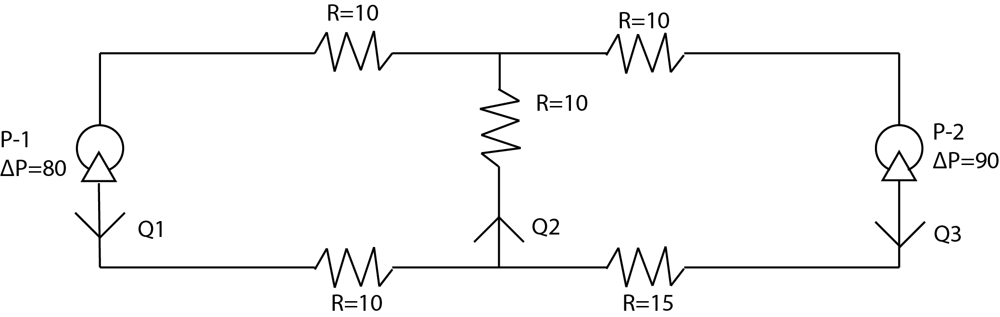

3.3. Gauss–Jordan elimination#
To solve a system of linear equations like
Note that the second equation is easily solved for \(x_2 = -2\), which can be substituted in the first equation to give \(x_1 = (2-5x_2)/2 = 6\). If we can bring systems so that one variable is isolated, we can work backwards to solve the others! How do we do this systematically for equations?
Because of 2 and 3, we can also add a multiple of one equation to another.
For example, suppose we instead started with the equations
Adding twice the first equation to the second equation gives \(13 x_2 = -26\), from which we were able solve before!
This process can be tedious, particularly when there are more variables and equations. Matrices provide a systematic approach to both performing elementary operations to isolate variables, as well as to carry out subsequent substitution. This entire procedure is called Gauss-Jordan elimination with backsubstitution.
Rewrite the equations as \(\vv{A}\vv{x} = \vv{b}\) using a matrix and vectors
(3.29)#\[\begin{equation} \begin{bmatrix}2 5 \\ -4 3\end{bmatrix} \begin{bmatrix}x_1 \\ x_2\end{bmatrix} = \begin{bmatrix}2 \\ -30\end{bmatrix} \end{equation}\]Form the “augmented” matrix \([\vv{A} \vv{b}]\)
(3.30)#\[\begin{equation} \mathbf{A} = \begin{bmatrix} 2 & 5 & 2\\ -4 & 3 & -30\end{bmatrix} \end{equation}\]Perform elementary operations on rows to create “pivot” points in each row. The goal is to get a number on the diagonals and zeros below. It is OK to have a zero on the diagonal if there are no nonzero values underneath it.
(3.31)#\[\begin{equation} \begin{bmatrix} 2 & 5 & 2 \\ -4 & 3 & -30 \end{bmatrix} \begin{matrix}\vphantom{R_1} \\ +2 R_1 \end{matrix} \to \begin{bmatrix} 2 & 5 & 2 \\ 0 & 13 & -26 \end{bmatrix} \end{equation}\]Here, we noted that we added twice Row 1 to Row 2 to eliminate the 4 under the first pivot point 2.
When you reach the bottom row, check there are no rows of zeros with a nonzero last column. This would be equivalent to a false equation (like \(0=1\)), meaning there is no solution and no further work is needed.
Work back up to turn pivot points into ones and get zeros above in each column
(3.32)#\[\begin{align} \begin{bmatrix} 2 & 5 & 2 \\ 0 & 13 & -26 \end{bmatrix} \begin{matrix}\vphantom{R_1} \\ \div 13 \end{matrix} &\to \begin{bmatrix} 2 & 5 & 2 \\ 0 & 1 & -2 \end{bmatrix} \begin{matrix}-5 R_2 \\ \vphantom{R_2}\end{matrix} \\ &\to \begin{bmatrix} 2 & 0 & 12 \\ 0 & 1 & -2 \end{bmatrix} \begin{matrix}\div 2 \\ \vphantom{R_2}\end{matrix} \\ &\to \begin{bmatrix} 1 & 0 & 6 \\ 0 & 1 & -2 \end{bmatrix} \end{align}\]The solution comes from reexpressing the augmented matrix as \(\vv{A} \vv{x} = \vv{b}\).
(3.33)#\[\begin{equation} \begin{bmatrix} 1 & 0 \\ 0 & 1 \end{bmatrix} \begin{bmatrix} x_1 \\ x_2 \end{bmatrix} = \begin{bmatrix} 6 \\ -2 \end{bmatrix} \end{equation}\]Or, \(x_1 = 6\) and \(x_2 = -2\).
Example: Pump circuit
Incompressible flow can be written analogous to an electrical circuit as
where \(\Delta P\) is the pressure change, R is the resistance, and Q is the volumetric flow rate. For the following pump “circuit”:
{kind=link}

The pressure and mass balances for the nodes and loop give:
Find \(Q_1\), \(Q_2\), and \(Q_3\).
First, rearrange the equations into consistent linear form:
Then, rewrite using matrix representation:
Now, perform Gauss-Jordan elimination steps to solve for the unknown flow rates. We form the augmented matrix, then use Row 1 to eliminate values in Rows 2 and 3:
Row 2 is all zeros because it was a redundant equation to Row 1. Swap Rows 2 and 4, then use the new Row 2 to eliminate value in Row 3:
Normalize Row 3 (divide by -95), then eliminate values above in Column 3:
Normalize Row 2 (divide by 10), then eliminate values above in Column 2:
Turning back into an equivalent system of equations gives the final solution, \(Q_1 = 2\), \(Q_2 = 4\), and \(Q_3 = 2\).
3.3.1. Number of solutions#
The number of solutions for the system of linear equations can be determined from the row-reduced augmented matrix.
There is no solution if there is a row of zeroes with a nonzero last column.
(3.42)#\[\begin{align} \begin{bmatrix} 3 & 2 & 1 & 3 \\ 2 & 1 & 1 & 0 \\ 6 & 2 & 4 & 6 \end{bmatrix} \begin{matrix}\vphantom{R_1} \\ -(2/3) R_1 \\ -2 R_1 \end{matrix} &\to \begin{bmatrix} 3 & 2 & 1 & 3 \\ 0 & -1/3 & 1/3 & -2 \\ 0 & -2 & 2 & 0 \end{bmatrix} \begin{matrix}\vphantom{R_1} \\ \times -3 \\ \div 2\end{matrix} \\ &\to \begin{bmatrix} 3 & 2 & 1 & 3 \\ 0 & 1 & -1 & 6 \\ 0 & -1 & 1 & 0 \end{bmatrix} \begin{matrix}\vphantom{R_1} \\ \vphantom{R_2} \\ +R_2 \end{matrix} \\ &\to \begin{bmatrix} 3 & 2 & 1 & 3 \\ 0 & 1 & -1 & 6 \\ 0 & 0 & 0 & 12 \end{bmatrix} \end{align}\]Since the last row is equivalent to \(0 = 12\), there is a false equation and the system has no solution.
There is one solution if there is one pivot for each unknown.
(3.43)#\[\begin{align} \begin{bmatrix} 3 & 2 & 1 & 3 \\ 2 & 1 & 1 & 0 \\ 6 & 2 & 5 & 6 \end{bmatrix} \begin{matrix}\vphantom{R_1} \\ -(2/3) R_1 \\ -2 R_1 \end{matrix} &\to \begin{bmatrix} 3 & 2 & 1 & 3 \\ 0 & -1/3 & 1/3 & -2 \\ 0 & -2 & 3 & 0 \end{bmatrix} \begin{matrix}\vphantom{R_1} \\ \times -3 \\ \vphantom{R_3} \end{matrix} \\ &\to \begin{bmatrix} 3 & 2 & 1 & 3 \\ 0 & 1 & -1 & 6 \\ 0 & -2 & 3 & 0 \end{bmatrix} \begin{matrix}\vphantom{R_1} \\ \vphantom{R_2} \\ +2 R_2 \end{matrix} \\ &\to \begin{bmatrix} 3 & 2 & 1 & 3 \\ 0 & 1 & -1 & 6 \\ 0 & 0 & 1 & 12 \end{bmatrix} \begin{matrix} -R_3 \\ +R_3 \\ \vphantom{R_3} \end{matrix} \\ &\to \begin{bmatrix} 3 & 2 & 0 & -9 \\ 0 & 1 & 0 & 18 \\ 0 & 0 & 1 & 12 \end{bmatrix} \begin{matrix} -2R_2 \\ \vphantom{R_3} \end{matrix} \\ &\to \begin{bmatrix} 3 & 0 & 0 & -45 \\ 0 & 1 & 0 & 18 \\ 0 & 0 & 1 & 12 \end{bmatrix} \begin{matrix} \div 3 \\ \vphantom{R_3} \end{matrix} \\ &\to \begin{bmatrix} 1 & 0 & 0 & -15 \\ 0 & 1 & 0 & 18 \\ 0 & 0 & 1 & 12 \end{bmatrix} \end{align}\]There are 3 pivot points and 3 unknowns, the solution is \(x_1 = -15\), \(x_2 = 18\), and \(x_3 = 12\).
There are infinitely many solutions if there are fewer pivots than unknowns.
(3.44)#\[\begin{align} \begin{bmatrix} 3 & 2 & 1 & 3 \\ 2 & 1 & 1 & 0 \\ 6 & 2 & 4 & -6 \end{bmatrix} \begin{matrix}\vphantom{R_1} \\ -(2/3) R_1 \\ -2 R_1 \end{matrix} &\to \begin{bmatrix} 3 & 2 & 1 & 3 \\ 0 & -1/3 & 1/3 & -2 \\ 0 & -2 & 2 & -12 \end{bmatrix} \begin{matrix}\vphantom{R_1} \\ \times -3 \\ \div -2\end{matrix} \\ &\to \begin{bmatrix} 3 & 2 & 1 & 3 \\ 0 & 1 & -1 & 6 \\ 0 & 1 & -1 & 6 \end{bmatrix} \begin{matrix}-2 R_2 \\ \vphantom{R_2} \\ \vphantom{R_3} \end{matrix} \\ &\to \begin{bmatrix} 3 & 0 & 3 & -9 \\ 0 & 1 & -1 & 6 \\ 0 & 0 & 0 & 0 \end{bmatrix} \begin{matrix}\div 3 \\ \vphantom{R_2} \\ \vphantom{R_3} \end{matrix} \\ &\to \begin{bmatrix} 1 & 0 & 1 & -3 \\ 0 & 1 & -1 & 6 \\ 0 & 0 & 0 & 0 \end{bmatrix} \end{align}\]There are 2 pivot points but 3 unknowns, so there is one free variable. The solution is \(x_1 = -x_3 - 3\) and \(x_2 = x_3 + 6\), with \(x_3\) free.
3.3.2. Skill builder problems#
Solve using Gauss-Jordan elimination
(3.45)#\[\begin{align} 5 x_1 - 2 x_2 &= 20.9 \\ -x_1 + 4x_2 &= -19.3 \end{align}\]Solution
Form the augmented matrix and perform row reduction:
(3.46)#\[\begin{align} \begin{bmatrix} 5 & -2 & 20.9 \\ -1 & 4 & -19.3 \end{bmatrix} \begin{matrix} {\rm swap} \\ \vphantom{R_2}\end{matrix} &\to \begin{bmatrix} -1 & 4 & -19.3 \\ 5 & -2 & 20.9\end{bmatrix} \begin{matrix} \times -1 \\ \vphantom{R_2}\end{matrix} \\ &\to \begin{bmatrix} 1 & -4 & 19.3 \\ 5 & -2 & 20.9\end{bmatrix} \begin{matrix} \vphantom{R_1} \\ -5 R_1 \end{matrix} \\ &\to \begin{bmatrix} 1 & -4 & 19.3 \\ 0 & 18 & -75.6\end{bmatrix} \begin{matrix} \vphantom{R_1} \\ \div 18 \end{matrix} \\ &\to \begin{bmatrix} 1 & -4 & 19.3 \\ 0 & 1 & -4.2\end{bmatrix} \begin{matrix} +4 R_2 \\ \vphantom{R_2} \end{matrix} \\ &\to \begin{bmatrix} 1 & 0 & 2.5 \\ 0 & 1 & -4.2\end{bmatrix} \end{align}\]so \(x_1 = 2.5\) and \(x_2 = -4.2\).
Solve using Gauss-Jordan elimination
(3.47)#\[\begin{align} x_1 + 4 x_2 = 8 \\ 2 x_1 + 8 x_2 = 17 \end{align}\]Solution
(3.48)#\[\begin{align} \begin{bmatrix} 1 & 4 & 8 \\ 2 & 8 & 17 \end{bmatrix} \begin{matrix} \vphantom{R_1} \\ -2 R_1\end{matrix} &\to \begin{bmatrix} 1 & 4 & 8 \\ 0 & 0 & 1\end{bmatrix} \end{align}\]The equations do not have a solution because the last row is false.
Solve using Gauss-Jordan elimination
(3.49)#\[\begin{align} x_1 + x_2 + x_2 = 2 \\ 4x_2 + 6 x_3 = -12 \\ x_1 + x_2 + x_3 = 2 \end{align}\]Solution
(3.50)#\[\begin{align} \begin{bmatrix} 0 & 1 & 1 & -2 \\ 0 & 4 & 6 & -12 \\ 1 & 1 & 1 & 2 \end{bmatrix} \begin{matrix} \vphantom{R_1} \\ \rm shuffle \\ \vphantom{R_3} \end{matrix} &\to \begin{bmatrix} 1 & 1 & 1 & 2 \\ 0 & 1 & 1 & -2 \\ 0 & 4 & 6 & -12 \end{bmatrix} \begin{matrix} \vphantom{R_1} \\ \vphantom{R_2} \\ \ -4 R_2 \end{matrix} \\ &\to \begin{bmatrix} 1 & 1 & 1 & 2 \\ 0 & 1 & 1 & -2 \\ 0 & 0 & 2 & -4 \end{bmatrix} \begin{matrix} \vphantom{R_1} \\ \vphantom{R_2} \\ \div 2 \end{matrix} \\ &\to \begin{bmatrix} 1 & 1 & 1 & 2 \\ 0 & 1 & 1 & -2 \\ 0 & 0 & 1 & -2 \end{bmatrix} \begin{matrix} -R_3 \\ -R_3 \\ \vphantom{R_3} \end{matrix} \\ &\to \begin{bmatrix} 1 & 1 & 0 & 4 \\ 0 & 1 & 0 & 0 \\ 0 & 0 & 1 & -2 \end{bmatrix} \begin{matrix} -R_2 \\ \vphantom{R_2} \\ \vphantom{R_3} \end{matrix} \\ &\to \begin{bmatrix} 1 & 0 & 0 & 4 \\ 0 & 1 & 0 & 0 \\ 0 & 0 & 1 & -2 \end{bmatrix} \end{align}\]so \(x_1 = 4\), \(x_2 = 0\), and \(x_3 = -2\).
Solve using Gauss-Jordan elimination
(3.51)#\[\begin{align} 4x_2 - 11x_3 &= 24 \\ 3x_1 - 11x_2 - 2x_3 &= -6 \\ 6x_1 - 17x_2 + x_3 &= 18 \end{align}\]Solution
(3.52)#\[\begin{align} \begin{bmatrix} 0 & 4 & 4 & 24 \\ 3 & -11 & -2 & -6 \\ 6 & - 17 & 1 & 18 \end{bmatrix} \begin{matrix}{\rm swap}\,R_2 \\ \vphantom{R_2} \\ \vphantom{R_3}\end{matrix} &\to \begin{bmatrix} 3 & -11 & -2 & -6 \\ 0 & -4 & 4 & 24 \\ 6 & - 17 & 1 & 18 \end{bmatrix} \begin{matrix}\vphantom{R_1} \\ \vphantom{R_2} \\ -2 R_1\end{matrix}\\ &\to \begin{bmatrix} 3 & -11 & -2 & -6 \\ 0 & 4 & 4 & 24 \\ 0 & 5 & 5 & 30 \end{bmatrix} \begin{matrix}\vphantom{R_1} \\ \div 4 \\ \div 5\end{matrix}\\ &\to \begin{bmatrix} 3 & -11 & -2 & -6 \\ 0 & 1 & 1 & 6 \\ 0 & 1 & 1 & 6 \end{bmatrix} \begin{matrix}\vphantom{R_1} \\ \vphantom{R_2} \\ -R_2\end{matrix}\\ &\to \begin{bmatrix} 3 & -11 & -2 & -6 \\ 0 & 1 & 1 & 6 \\ 0 & 0 & 0 & 0 \end{bmatrix} \begin{matrix}+11 R_2 \\ \vphantom{R_2} \\ \vphantom{R_3}\end{matrix}\\ &\to \begin{bmatrix} 3 & 0 & 9 & 60 \\ 0 & 1 & 1 & 6 \\ 0 & 0 & 0 & 0 \end{bmatrix} \begin{matrix}\div 3 \\ \vphantom{R_2} \\ \vphantom{R_3}\end{matrix}\\ &\to \begin{bmatrix} 1 & 0 & 3 & 20 \\ 0 & 1 & 1 & 6 \\ 0 & 0 & 0 & 0 \end{bmatrix} \end{align}\]Hence,
(3.53)#\[\begin{align} x_1 - 3x_3 &= 20 \to & x_1 &= 3 x_3 + 20 \\ x_2 + x_3 &= 6 \to & x_2 &= x_3 + 6 \end{align}\]with \(x_3\) free.
Solve using Gauss-Jordan elimination:
(3.54)#\[\begin{align} 2x_1 - x_2 + 3x_3 &= -1 \\ -4x_1 + 2x_2 - 6x_{3} &= 2 \end{align}\]Solution
(3.55)#\[\begin{align} \begin{bmatrix} 2 & -1 & 3 & -1 \\ -4 & 2 & -6 & -2 \end{bmatrix} \begin{matrix}\vphantom{R_1} \\ +2R_1\end{matrix} \to \begin{bmatrix} 2 & -1 & 3 & -1 \\ 0 & 0& 0 & 0 \end{bmatrix} \end{align}\]Hence,
(3.56)#\[\begin{equation} 2x_1 - x_2 + 3x_3 = -1 \to \quad x_1 = \frac{1}{2}(x_2 + x_3 - 1) \end{equation}\]with \(x_2\) and \(x_3\) free.